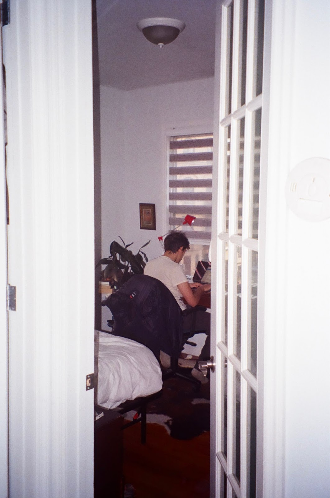

Samuel Brodsky is a freelance writer and film producer living in Brooklyn, NY.
Writing
"The Pampero Cinematic Universe: 20 Films in 20 Years"
Filmmaker Magazine
"Affection and Sadness in Suburbia: Tyler Taormina on Happer's Comet"
Screen Slate
"Patricio Guzmán on the The Battle of Chile"
Film Comment
"Chilean Director Matías Bize on the 20th Anniversary of His Landmark Debut Feature SÁBADO"
TropicalFront
Email
Letterboxd
CV